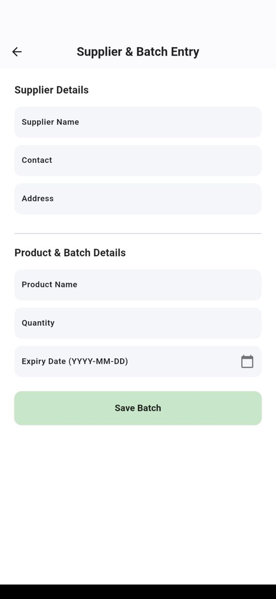
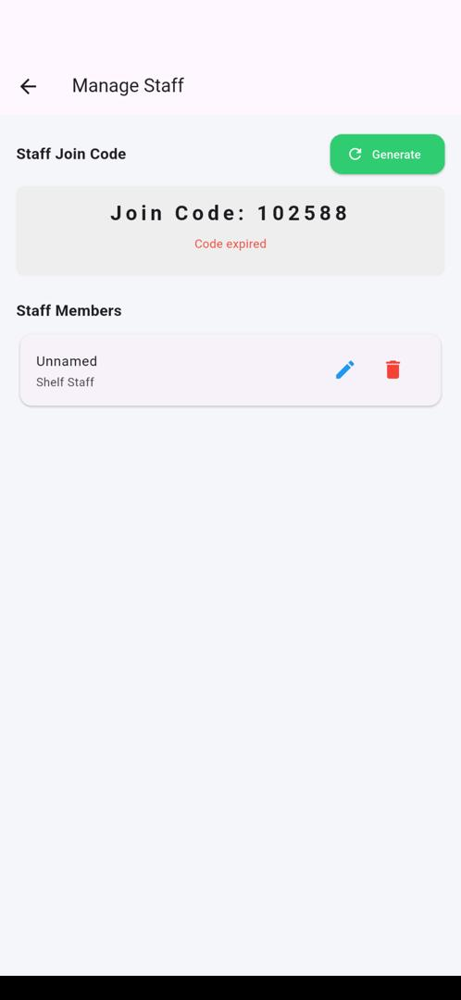
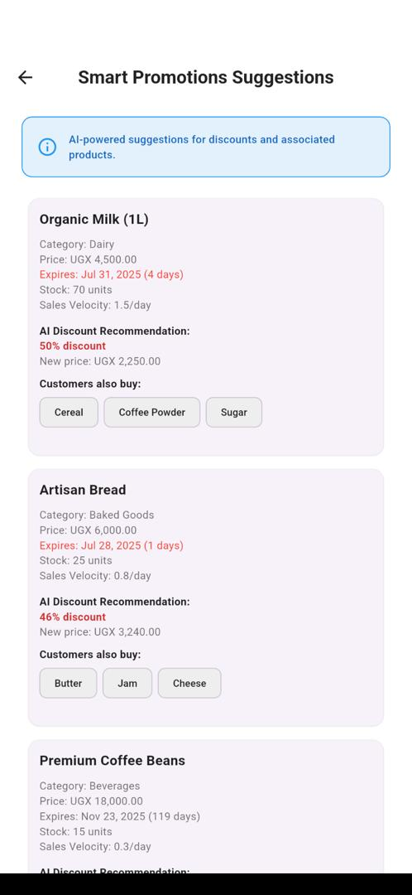
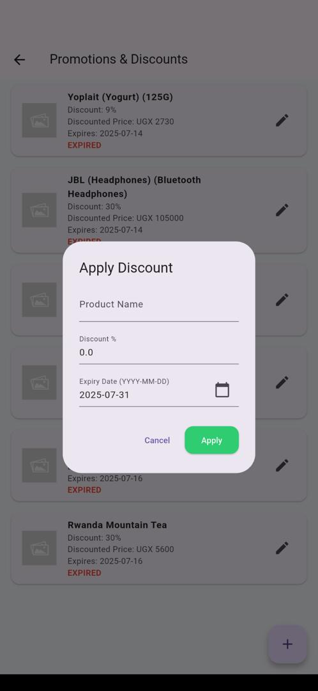
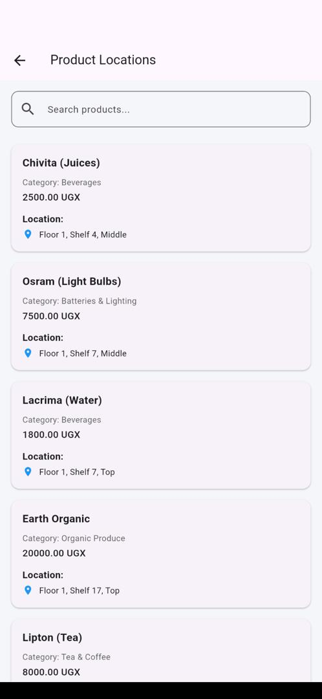
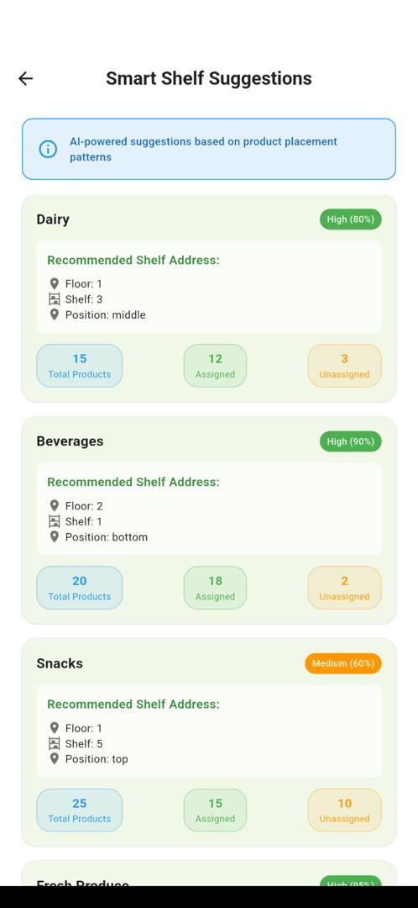
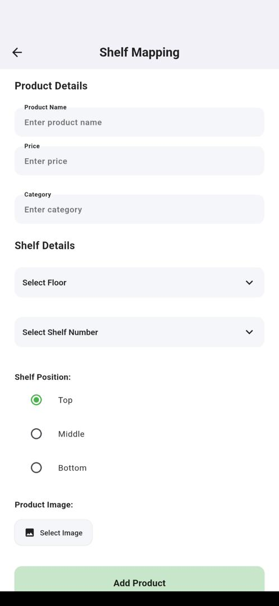
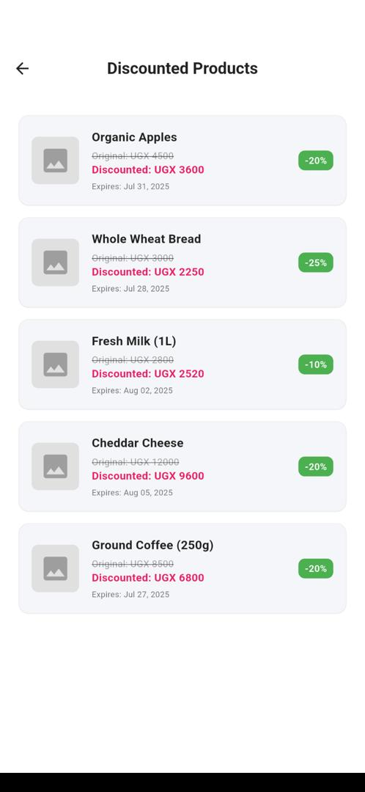

Freshtally is a smart retail management solution designed to bring efficiency, clarity, and control to supermarket operations. It connects the different roles within a supermarket—managers, shelf attendants, store managers and customers—through a unified platform. Underneath, it relies on a powerful data pipeline driven by our lightweight desktop **connector app**, which fetches sales data directly from existing POS systems and syncs it seamlessly to the cloud. This is the data used by the FreshTally to track sales and suggest promotions.
The Store Manager oversees system setup and core data input. They are responsible for adding new products, entering batch numbers and expiry dates, and linking products to their respective suppliers.
Managers, firstly handle how the invloved supermarket staff join and use the app in that capacity.This done through secure one-time user codes.
The manager can access smart insights and tools to drive sales and inventory health. They can create promotions, track stock levels, and receive smart suggestions on what items to promote or discount. With analytics from the collected data, they can also monitor products nearing expiry or ones that aren’t selling well—helping them make timely decisions.
 The manager can also view and update product information, track stock levels, and receive smart suggestions on what items to promote or discount. With analytics from the connector data, they can also monitor products nearing expiry or ones that aren’t selling well—helping them make timely decisions.
The manager can also view and edit all product information.
Shelf attendants use the app to know exactly where to place products. This is through smart suggestions provided by the app. Smart suggestions also guide optimal shelf arrangements for visibility and sales.
They record shelf locations for each item and receive notifications when items need to be relocated for promotions or when price changes occur.
 Customers enjoy a modern shopping experience. They can search for products, view promotional offers, view prices, and build a personal shopping list.
Customers always see updated information including current deals and availability, reducing time spent wandering the aisles.